Dr. Iain Dunning
Researcher and engineer, with a focus on applying techniques from
machine learning and optimization to solve difficult decision problems -
plan a logistics network, trade futures, run a power grid, or solve a video game.
Currently living in New York City, 🇺🇸.
Contact: iaindunning 📧 gmail.
Recent Work History
 Hudson River Trading
Hudson River Trading
Team Lead & Researcher (August '18 —)
I run "HAIL" - HRT AI Labs. We make deep learning work for systematic trading by
integrating and translating techniques from other domains and developing
proprietary extensions for our unique needs.
DeepMind Technologies
Senior Research Engineer (July '16 — July '18)
Applying large-scale artificial intelligence techniques like
deep reinforcement learning to complex
environments, using
cutting-edge deep learning hardware.
Team lead for five engineers,
tech lead for multiagent research engineering.
 Massachusetts Institute of Technology
Massachusetts Institute of Technology
Teaching & Research Assistant (Sep. '11 — May '16)
See research below.
Co-created XX,000-person EdX class
The Analytics Edge. Taught MBA and executive MBA residential
versions of the class at MIT
Sloan School of
Management.
 Google
Google
Intern (June 13 — Aug. '13)
Worked on search engine crawler. Designed & implemented
algorithms to improve the crawl prioritization, analyzed impacts
on very large (O(1010) rows, O(103) TB)
datasets with MapReduce/Flume.
Research
Human-level performance in 3D multiplayer games with
population-based reinforcement learning
M. Jaderberg*, W. Czarnecki*, I. Dunning*, L. Marris,
G. Lever, A. García Castañeda, C. Beattie, N. Rabinowitz, A. Morcos,
A. Ruderman, N. Sonnerat, T. Green, L. Deason, J. Z. Leibo,
D. Silver, D. Hassabis, K. Kavukcuoglu, T. Graepel.
Science, 2019.
[Science]
[arXiv]
[video]
[DeepMind blog]
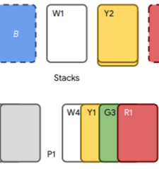
The Hanabi Challenge: A New Frontier in AI Research
N. Bard*, J. Foerster*, S. Chandar, N. Burch, M. Lanctot, F. Song, E. Parisotto, V. Dumoulin,
S. Moitra, E. Hughes, I. Dunning, S. Mourad, H. Larochelle, M. Bellemare, M. Bowling.
Artificial Intelligence, 2020.
[arXiv]
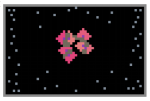
Malthusian Reinforcement Learning
J. Z. Leibo, J. Perolat, E. Hughes, S. Wheelwright, A. Marblestone, E. Duéñez-Guzmánn,
P. Sunehag, I. Dunning, T. Graepel.
AAMAS, 2019.
[arXiv]
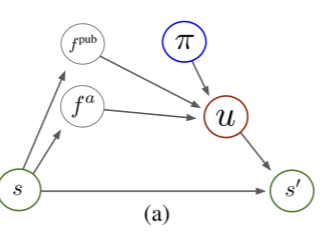
Bayesian Action Decoder for Deep Multi-Agent Reinforcement Learning
J. Foerster, F. Song, E. Hughes, N. Burch, I. Dunning, S. Whiteson, M. Botvinick, M. Bowling.
Submitted, 2019.
[arXiv]
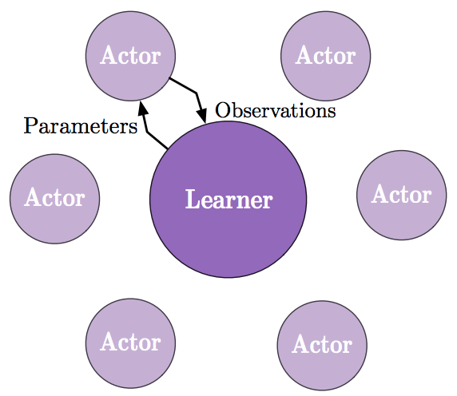
IMPALA: Scalable distributed deep-RL with importance weighted
actor-learner architectures
L. Espeholt*, H. Soyer*, R. Munos*, K. Simonyan, V. Mnih, T. Ward,
Y. Doron, V. Firoiu, T. Harley, I. Dunning,
S. Legg, K. Kavukcuoglu.
ICML, 2018.
[arXiv]
[DeepMind blog]
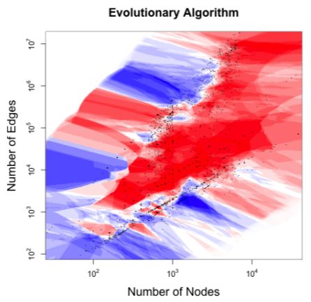
What Works Best When? A Systematic Evaluation of Heuristics for Max-Cut and QUBO
I. Dunning, S. Gupta, J. Silberholz.
INFORMS Journal on Computing, 2018.
[PDF]
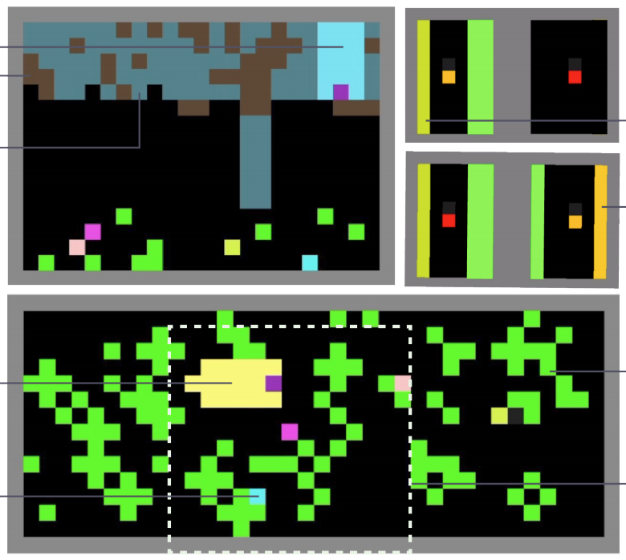
Inequity aversion improves cooperation intertemporal social dilemmas
E. Hughes*, J. Z. Leibo*, M. Philips, K. Tuyls, E. Duéñez-Guzmán,
A. García Castañeda, I. Dunning, T. Zhu, K. McKee, R. Koster,
H. Roff, T. Graepel.
NeurIPS, 2018.
[arXiv]
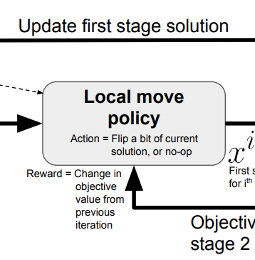
Learning Fast Optimizers for Contextual Stochastic Integer Programs
V. Nair, K. Dvijotham, I. Dunning, O. Vinyals.
UAI, 2018.
[paper]
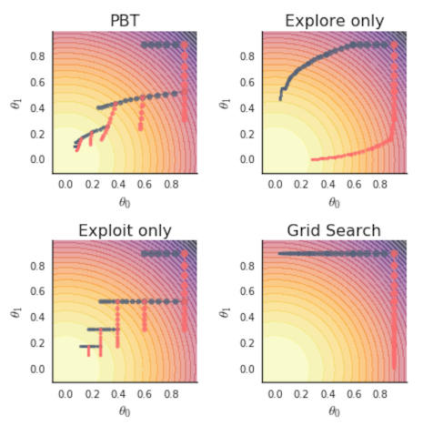
Population based training of neural networks
M. Jaderberg, V. Dalibard, S. Osindero, W. Czarnecki, J. Donahue,
A. Razavi, O. Vinyals, T. Green, I. Dunning, K. Simonyan,
C. Fernando, K. Kavukcuoglu.
DeepMind tech report, 2017.
[arXiv]
[DeepMind blog]
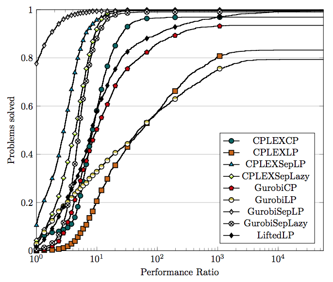
Extended formulations in mixed integer conic quadratic programming
J. P. Vielma*, I. Dunning, J. Huchette, M. Lubin.
Mathematical Programming Computation, 2017.
[arXiv]
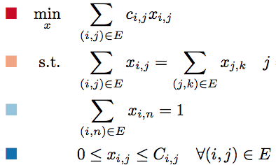
JuMP: A modeling language for mathematical optimization
I. Dunning*, J. Huchette*, M. Lubin*.
SIAM Review, 2017.
[arXiv]
[JuMP package]
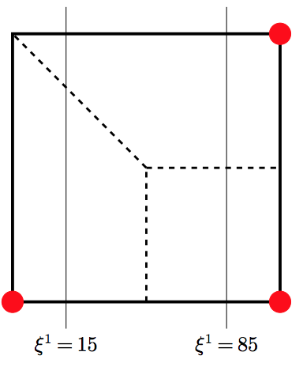
Multistage robust mixed-integer optimization with adaptive partitions
D. Bertsimas, I. Dunning*.
Operations Research, 2016.
[Optimization Online]
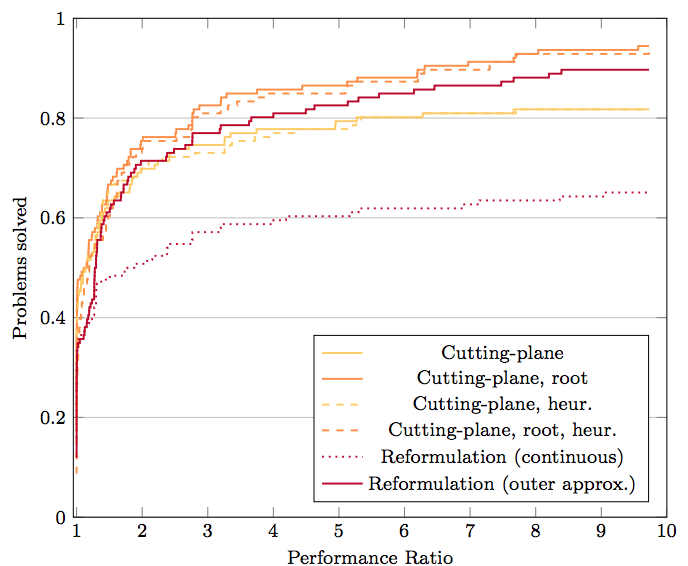
Reformulation versus cutting-planes for robust optimization
D. Bertsimas, I. Dunning*, M. Lubin*.
Computational Management Science, 2016.
[Optimization Online]
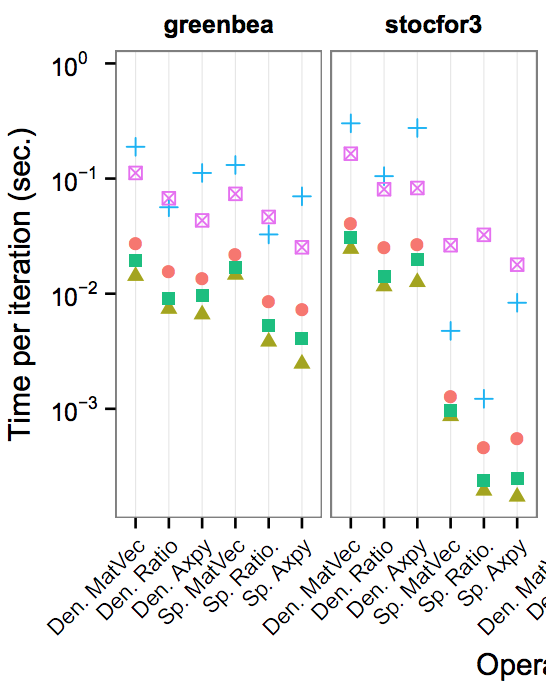
Computing in operations research using Julia
M. Lubin, I. Dunning.
INFORMS Journal on Computing, 2015.
[arXiv]
See
Google Scholar for other references.
Some papers use alphabetical ordering -
asterix indicates "first" author.
Education
Massachusetts Institute of Technology
Ph.D., Operations Research (Sep. '11 — May '16)
At the MIT Operations
Research Center, supervised by Prof.
Dimitris Bertsimas
 University of Auckland
University of Auckland
B.E.(Hons), Engineering Science (Mar. '07 — Dec. '10)